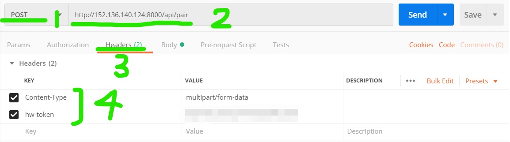
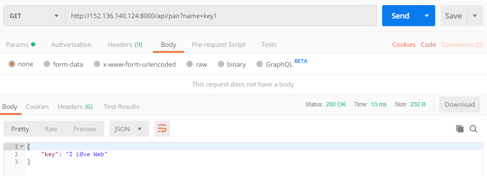

毫无基础的我，竟然也写完了这个作业，我想借这个日志无脑地记录一下我遇到的问题和怎么实现。
（但我还不是很理解orz）。
实现静态资源服务（Koa）
-
安装koa
npm i koa -
app.js
const Koa = require('koa');
const app = new Koa();
const path = require('path');
const serve = require('koa-static');
const home = serve(path.join(__dirname)+'/src/');
app.use(home);
app.listen(8000);其中我的主页html、js、css都在当前目录的叫src的文件夹里。然后：
npm install
npm start然后在浏览器里输入：IP:8000 就可以看到主页了。按Ctrl+C可以关闭服务器。
-
如果缺少模块
npm install -g 'xxx' //xxx就是缺少的模块(有可能要用sudo)如果还不行，就输入:
export NODE_PATH=/usr/local/lib/node_modules/
实现静态资源服务（express）
参考链接： https://www.runoob.com/nodejs/nodejs-express-framework.html
-
安装express
npm install express --save之后还用了multer中间件，用来处理multipart/form-data
npm install multer --save -
app.js
var express = require('express')
var app = express()
app.use('/src', express.static('src'))
var server = app.listen(8000, function () { })然后在浏览器里输入：IP:8000/src/资源文件 就可以看到那些资源了。
检测hw-token
用req.headers['hw-token']访问hw-token值，判断与自己的是否相等。
实现api/compute（express）
multer用法参考链接： https://www.npmjs.com/package/multer
因为post请求的Content-Type='multipart/form-data',所以用multer，用法如下：
var multer = require('multer')
var upload = multer()
app.post('/api/compute', upload.none(), function (req, res) {...}）
因为只需要文本域，传的是none()。这时候表单内容都在req.body里。如果要传文件等，可以参考上面链接。
在function读取/处理数据。
返回结果类型为 application/json, 我的方式如下：
res.set('Content-Type', 'application/json; charset=utf-8')
res.send(response)
response是我应该返回的内容。
实现api/pair（express）
get和delete只要用app.get('/api/pair',function (req, res) {...})
app.delete('/api/pair',function (req, res) {...})即可，数据在req.query里。
测试(postman)
首先，比如我们要测/api/pair的post请求：
- 在1处选择post。
- 在2处填写url，后面写上接口。
- 在3处headers添加需要的信息，比如hw-token。Content-Type会根据body的选择自己修改。
- 在Body的1处选择对应的类型，然后在下面的表格里自己添加内容。 点击Send，发出请求。 在3处会显示状态，成功就是200。
我们可以再看看get。
在最下面可以看到response的内容。
over
写日志好累hhhh